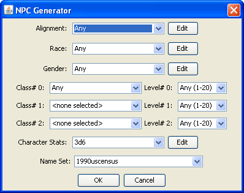

NPC Generator Window
The New NPC command, found under the File menu, opens up a new window containing options for creating random characters within a set of parameters you can specify. The options for each parameter depend upon the gameMode you are using. The only gameMode currently supported is the RSRD (35e) gameMode. Other gameModes will be added as time permits. The available parameters are:
Alignment - You can specify a specific alignment or a random selection from a sub-set (such as "any Good") or a random selection from all available alignments.
Race - You can specify a specific race or choose "Any", "Any Core" or "Any Humanoid" to be randomly selected.
Gender - You can set the gender or have it randomly assigned.
Class/Level - You can specify up to three classes and levels for your NPC.
Character Stats - You can specify the roll-method used to generate the base stats for your NPC.
Name Set - You can specify which of the name-sets to use to generate a name for your NPC.